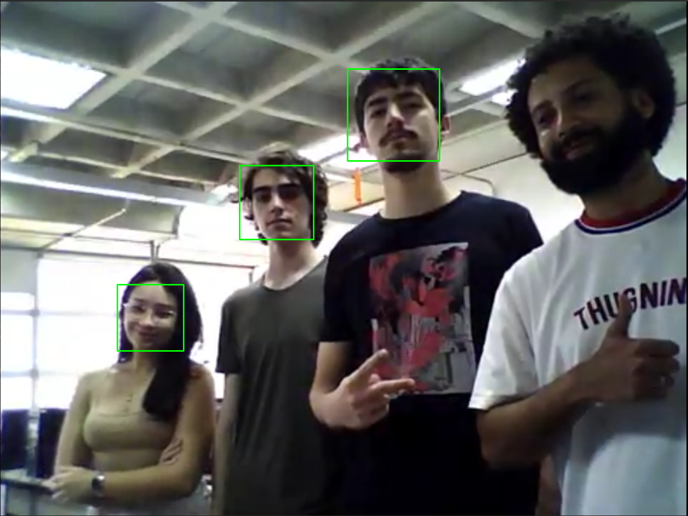
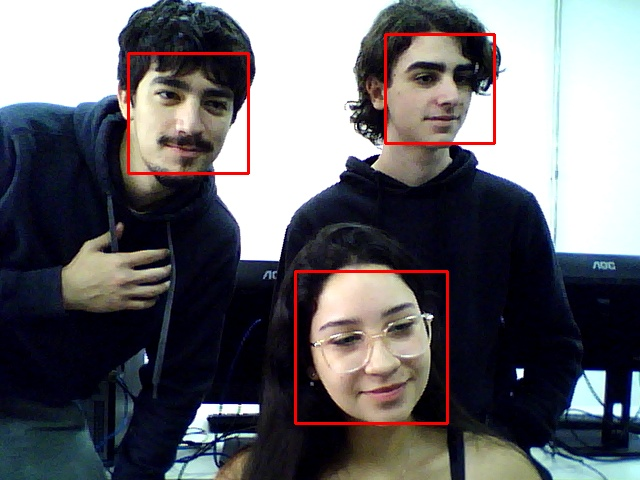

Introdução
Este relatório tem como objetivo detectar rostos através de imagens baixadas e webcam ao vivo.
Materiais e Métodos
Foi utilizado o seguinte código para a identificação dos rostos da imagem já baixada na máquina.
#include
#include
using namespace cv;
using namespace std;
int main() {
vector imageFiles = {
"grupo.png"
};
CascadeClassifier face_cascade;
if (!face_cascade.load("haarcascade_frontalface_default.xml")) {
cerr << "Erro ao carregar o modelo XML!" << endl;
return -1;
}
for (const auto &filename : imageFiles) {
Mat image = imread(filename);
if (image.empty()) {
cerr << "Erro ao carregar a imagem: " << filename << endl;
continue;
}
Mat gray;
cvtColor(image, gray, COLOR_BGR2GRAY);
equalizeHist(gray, gray);
vector faces;
face_cascade.detectMultiScale(gray, faces, 1.1, 5, 0, Size(30, 30));
for (size_t i = 0; i < faces.size(); i++) {
rectangle(image, faces[i], Scalar(0, 255, 0), 2);
}
imshow("Detecção de Rosto - " + filename, image);
cout << "Pressione 's' para salvar ou qualquer outra tecla para continuar..." << endl;
char c = (char)waitKey(0);
if (c == 's' || c == 'S') {
string output = "detect_" + filename;
imwrite(output, image);
cout << "Imagem salva como: " << output << endl;
}
destroyAllWindows();
}
return 0;
}
Já este código para a identificação dos rostos através da webcam. Basta clicar em "s" ou "S" para salvar a imagem.
#include
#include
using namespace cv;
using namespace std;
int main() {
VideoCapture cap(0);
if (!cap.isOpened()) {
cerr << "Erro ao abrir a webcam!" << endl;
return -1;
}
CascadeClassifier face_cascade;
if (!face_cascade.load("haarcascade_frontalface_default.xml")) {
cerr << "Erro ao carregar o modelo XML!" << endl;
return -1;
}
cout << "Pressione 's' para salvar imagem, 'q' para sair." << endl;
while (true) {
Mat frame, gray;
cap >> frame;
if (frame.empty()) break;
cvtColor(frame, gray, COLOR_BGR2GRAY);
equalizeHist(gray, gray);
vector faces;
face_cascade.detectMultiScale(gray, faces, 1.1, 5, 0, Size(30, 30));
for (size_t i = 0; i < faces.size(); i++) {
rectangle(frame, faces[i], Scalar(0, 0, 255), 2);
}
imshow("Detecção de Rostos - Webcam", frame);
char c = (char)waitKey(30);
if (c == 'q' || c == 27) break;
if (c == 's' || c == 'S') {
imwrite("snapshot.jpg", frame);
cout << "Imagem salva como snapshot.jpg" << endl;
}
}
cap.release();
destroyAllWindows();
return 0;
}
Resultados e Análises
 Pelos resultados obtidos, percebemos que:
Conclusões e Comentários Finais